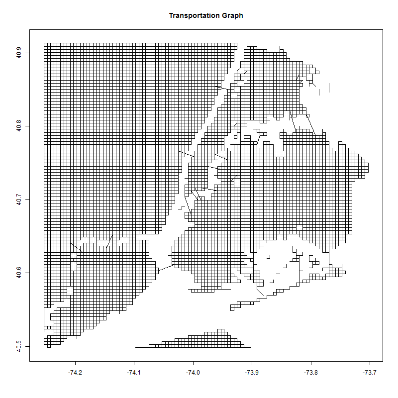

The raw counts of pickups and dropoffs are first gridded (Census tracts shown here) and binned into 15 minute intervals using a mapReduce() framework. Further averaging across all times yields the summary statistic gif above. This provides a map of the expected sources/sinks of empty cabs throughout the day
Using relatively simple assumptions regarding cab behavior, a transport graph is used to propagate the location of empty cabs. This allows the prediction of pickup probabilities in the interval, which can then be transformed to expected wait times with a uniformity assumption.